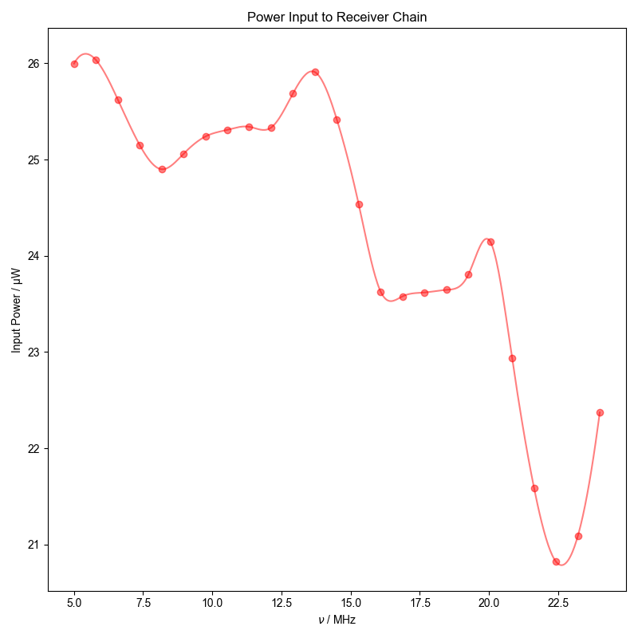
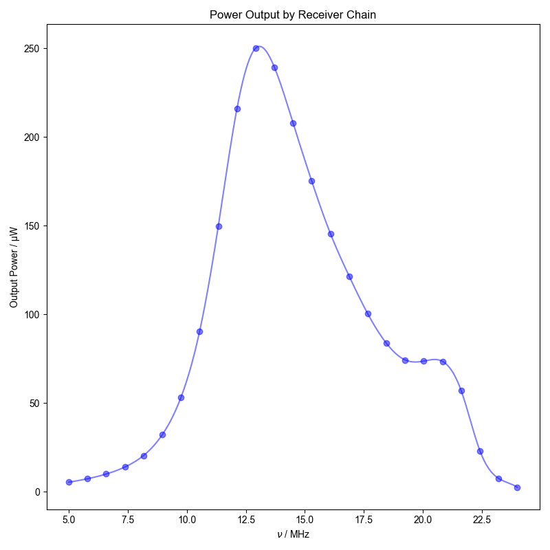
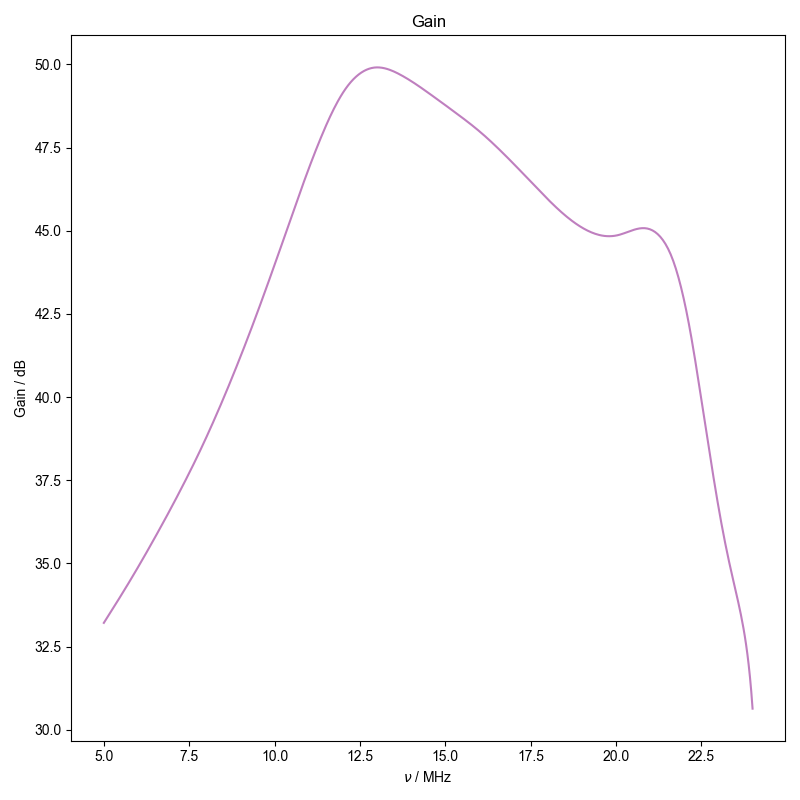

Note
Go to the end to download the full example code
” Process Gain of Receiver Chain ==============================
Two files are required for the following example:
File1 contains the analytic signal acquired on the GDS oscilloscope directly output by the rf source. File2 contains the analytic signal acquired on the GDS oscilloscope at the output of the receiver chain when the same signal of File1 is injected into a calibrated attenuator followed by the input of the receiver chain.
Each node pertains to signal with a different frequency (in kHz) so that the final plots are a function of frequency. The plots are produced in the following order:
Power output directly from the rf source as a function of frequency
Power output by the receiver chain as a function of frequency
Gain of the receiver chain as a function of frequency
- 
- 
- 
using return-list -- this should be deprecated in favor of stub loading soon!
using return-list -- this should be deprecated in favor of stub loading soon!
1: Power Input to Receiver Chain |||MHz
2: Power Output by Receiver Chain |||MHz
3: Gain |||MHz
import numpy as np
from numpy import pi
import pyspecdata as psd
from sympy import symbols
import sympy as sp
import re
attenuator_dB = 40.021 # Exact (measured) attenuation of attenuation assembly
# between source and receiver chain
data_dir = "ODNP_NMR_comp/noise_tests"
file1 = "240123_power_in_analytic.h5"
file2 = "240123_power_out_analytic.h5"
nu_name = r"$\nu$"
def determine_power_from_fit(filename, guessamp, guessph):
"""Fit time-domain capture to extract the amplitude ($V_{p}$) for each node
within the HDF5 file.
Parameters
==========
filename: str
Name of HDF5 file --- contains multiple nodes, named according to
frequency
guessamp: float
Approximate guess for the amplitude of the test signal in V
guessph: float
Approximate guess for the phase of the test signal
Returns
=======
p: nddata
nddata containing the test signal frequencies and corresponding
amplitudes from fits
"""
A, nu, phi, t = symbols("A nu phi t", real=True)
# {{{ Even though node names for both files should match, determine the
# node names and resulting frequency coordinates separate for both
# files.
all_node_names = sorted(
psd.find_file(
re.escape(filename),
exp_type=data_dir,
return_list=True,
),
key=lambda x: float(x.split("_")[1]),
)
frq_kHz = np.array([float(j.split("_")[1]) for j in all_node_names])
# }}}
p = (
psd.ndshape([len(frq_kHz)], [nu_name])
.alloc()
.set_units(nu_name, "Hz")
.setaxis(nu_name, frq_kHz * 1e3)
.set_units("W")
)
for j, nodename in enumerate(all_node_names):
d = psd.find_file(
re.escape(filename),
expno=nodename,
exp_type=data_dir,
)
# {{{ Fit to complex
d = psd.lmfitdata(d)
d.functional_form = A * sp.exp(1j * 2 * pi * nu * t + 1j * phi)
d.set_guess(
A=dict(value=guessamp, min=1e-4, max=1),
nu=dict(
value=p[nu_name][j],
min=p[nu_name][j] - 1e4,
max=p[nu_name][j] + 1e4,
),
phi=dict(value=guessph, min=-pi, max=pi),
)
d.fit(use_jacobian=False)
d.eval()
# }}}
# Calculate (cycle averaged) power from amplitude of the analytic
# signal:
p[nu_name, j] = abs(d.output("A")) ** 2 / 2 / 50
return p
input_power = determine_power_from_fit(file1, 5e-2, 0.75)
input_power.name("Input Power").set_plot_color("r")
output_power = determine_power_from_fit(file2, 15e-2, 0.75)
output_power.name("Output Power").set_plot_color("b")
with psd.figlist_var() as fl:
fl.next("Power Input to Receiver Chain")
input_power.human_units(scale_data=True)
fl.plot(input_power, "o")
input_spline = input_power.spline_lambda()
nu_fine = np.linspace(
input_power[nu_name][0],
input_power[nu_name][-1],
500,
)
fl.plot(input_spline(nu_fine))
fl.next("Power Output by Receiver Chain")
output_power.human_units(scale_data=True)
output_spline = output_power.spline_lambda()
fl.plot(output_power, "o")
fl.plot(output_spline(nu_fine))
fl.next("Gain")
gain_dB = (
10 * np.log10(output_spline(nu_fine) / input_spline(nu_fine))
+ attenuator_dB
)
gain_dB.name("Gain").set_units("dB").set_plot_color("purple")
fl.plot(gain_dB)
Total running time of the script: (0 minutes 17.330 seconds)